来源：https://bi3l15jqzky.feishu.cn/docx/HnBDdAK85oZCzExyAYackrWUnsd
大家好，我是生财3年级学生周玉英，在生财两年因为志愿者角色，找到我的副业方向，0成本做闲鱼，8月变现2w+。
2022年4月18日加入生财。同年8月份第一次参加航海，是小红书爆款笔记航海。
第一次打开了新世界的大门，了解了小红书平台，在航海期间我对写笔记也没有掌握要点，发的笔记是以公司产品为主，内容是产品卖点堆积的，21天航海，积累4个粉丝，0变现。
之后参加了精华共读，图书共读，视频号带货，动作上很勤快，但是实战上没有任何进展，假装努力的学习，混航海的学习姿势，这样在生财的第一年航海以0变现而结束。
在23年6月份参加小红书运营航海和续航航海，有几篇笔记爆了，接到了人生的第一个广，婴儿实物产品，赚到第一块钱。
后续还参加了剪辑航海做vlog博主，快团团卖货，小红书电商，从这些项目陆续也能赚到一点钱，几十到几百元不等。
过去2年里几乎每期都参加了航海实战项目，但是兜兜转转，基本0变现或者变现太少。
直到今年6月第一次报名航海志愿者，以志愿者的角色参加闲鱼高客单价项目运营。
到现在做闲鱼高客单2个月，在八月迎来了小爆发，实现了2w+的销售额，纯利润2000+以上。
与大佬不能比，但也算小有心得，今天和大家分享下我是如何做到的。
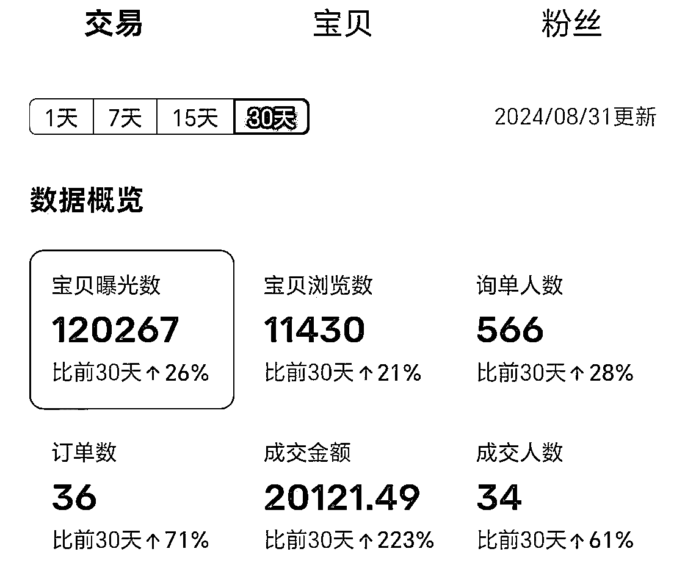
我是90后职场宝妈，去年5月份升级做妈妈后，开始做小红书运营宝妈育儿赛道，做了一段时间积累了300个粉丝，中间有也有接过几次广。每次更新都是我逼着自己去行动的，做起来非常拧巴，做着做着反馈少，就不愿意去更新，心里感觉也很疲惫。
于是我就去找靠谱做了一次电话咨询，通过解读我的盖洛普，提到我：纪律第一，执行是没问题。成就靠前，更新意愿低，因为我依赖于正反馈，正反馈低，所以我会不愿意做。建议我要做一些见正反馈快的事情，比如说电商。
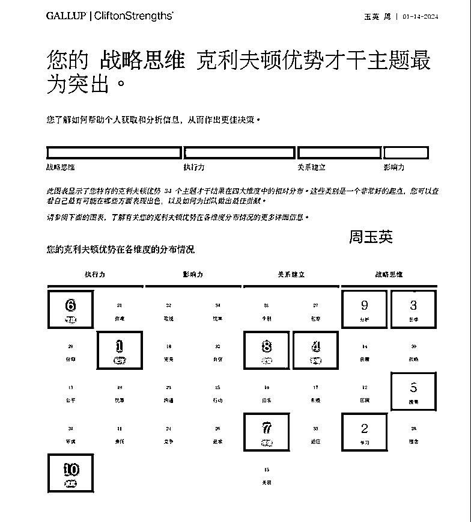
于是我重新做了定位，确定了做电商赛道，出单快，有了正反馈，我的行动力就会更强，行动力强也会带来更多的正反馈，以此来确保我的执行力跟上。
如果你和我遇到过同样的问题，一个项目遇到瓶颈，不知道该坚持还是换项目，感到迷茫，我把我总结的方法给你，希望能够对你有帮助
第一步：提升自我认知
通过盖洛普测试等工具，深入了解自己的擅长点和不擅长的点分别是什么，用什么方法做事，做什么样的事，可能更轻松且有结果。
第二步：找专业的人解读
如果是通过盖洛普测试，要找专业的人解读，专业的人才会给你相对公正，正确的建议。东听一句，西看一句，看的自己也云里雾里，不知道怎么行动，反而更焦虑。
，
第三步：策略调整
根据自我认知的结果，调整自己的方向，选择适合自己的项目。
亦仁大大说过：任何一个项目都可以让你赚到100万。所以项目没有好坏，但是适合自己的才是最好的。
之后我果断放弃小红书运营赛道，专攻电商赛道。参加了今年四月份的小红书电商运营航海。
开始写文案，做图片，在小红书开了老家的桐乡特产胎菊店铺，出了几单。
随着天气转热，我发现桐乡胎菊过了5月就会失去之前的口感，金黄色的胎菊颜色变的有点偏白。我特意向我公婆请教，他们说，胎菊要卖就是清明节前，11月份到清明节这段时间胎菊的质量是最好的。之后确实是质量会下降。为此我还去其他电商平台买了其他家胎菊，发现也是这样的情况。
但是我一直都是说自己家胎菊是最好的，怕客户失望。我过不了自己心里这关，就放弃了继续卖胎菊。
我的主业是小家电行业，做品牌管理，因为工作需要帮助公司处理淘汰品，我搞起了闲鱼。平时有一塔没一塔的上品，竟然也能陆续出单，让我体会到正反馈的快乐。
今年6月份报名学习了闲鱼高客单的运营，从6月份开始正式做闲鱼高客单产品，不断坚持选品，上品，学习卖货的知识优化沟通话术，到八月份迎来小爆发，一周成交了近1.3w，其中一单2700元的超高客单价，8月份突破了2w+的销售额。
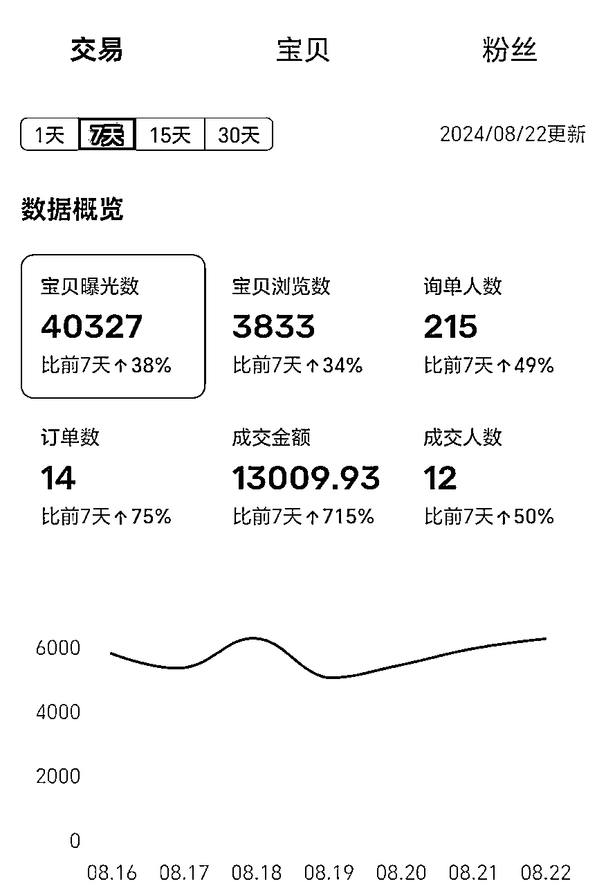
一句话总结：志愿者视角+听话照做+三个基本点
对比之前参加了几次实战的项目，基本是变现很少或者0变现。
这次可以实现这个突破，我觉得最大的转折点在于作为志愿者参与了航海项目，获得了一个比之前做项目更高的视角，看到了多种案例，加速了自己拿到结果。
利他就是最大的利己，在帮助学员后，反哺我自己更多。
在航海期间，我的34名组员，一位围观，2位落水，上岸31位。2位满勤，1位航海王者，28位打卡12次，一共393份作业。每一份打卡记录我都认真查看做了点赞和点评。
看到有疑惑的组员，我会鼓励他们去群里提问，已经有人询问让他去爬楼看学习记录。有因为售后想要放弃的我去鼓励打气，等到她出第二单的时候激动的和我分享喜悦。有航海到15天还没出单着急的我鼓励他继续坚持，在19天迎来开单，第20天也持续出单，终于赶走了他的焦虑，我也心里捏把汗，就怕他中途放弃。
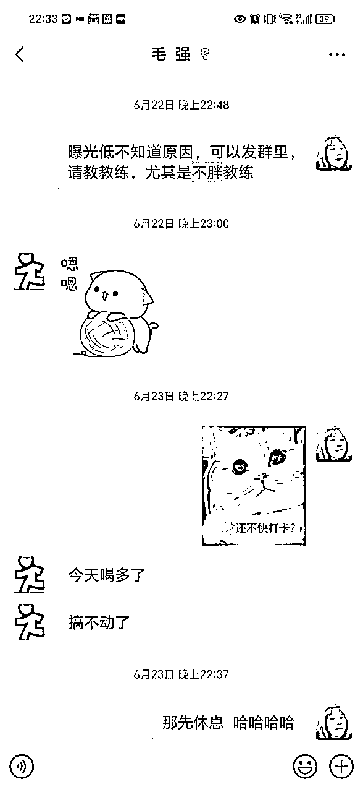
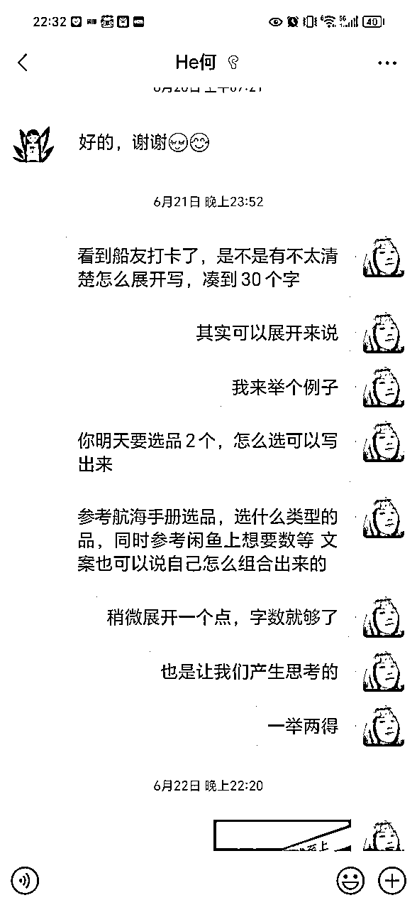
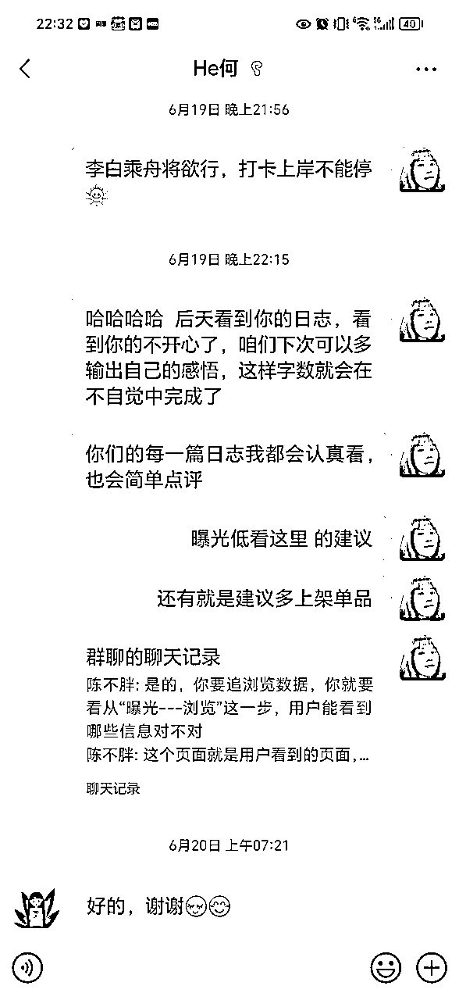
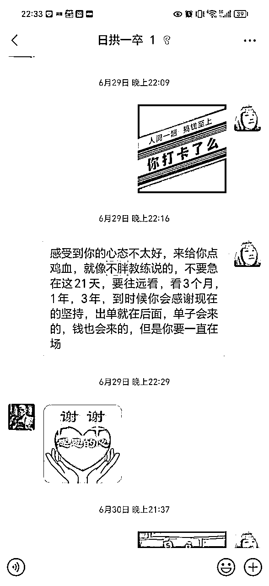
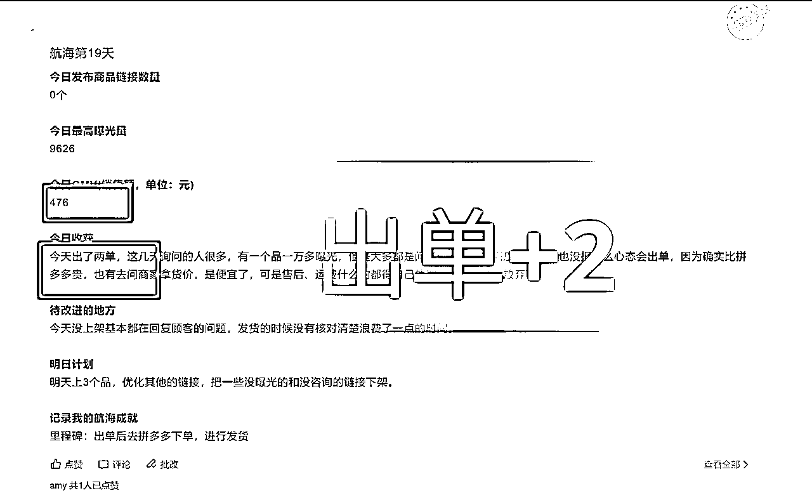
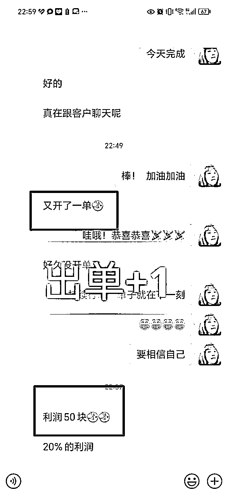
学员的经历也有过往自己的影子，在航海的21天收获却是过去2年不曾觉察和学习到的。
在和34名船员的沟通聊天，以及21天他们最终实战结果，你就会发现学员一直有出单的一定是坚持行动+不断思考迭代的。
没出单没成绩的有的是只注册了账号，有的是上了两个品放弃不再操作，有的还在想要退回保证金凑字数打卡，放弃了对这个项目的变现初心。
在结果端看经历，你就会明白了，航海项目变现的关键点：执行力+不放弃。
陪伴30多位学员的实操，也让我有机会看到30多位案例，通过这些案例来看，哪些动作会阻碍我拿到结果，哪些可以助力我拿到结果变现，我自然也会相应的调整自己的实操动作，这个操作直接加速我的实操结果进度。
闲鱼真的对新手非常友好，上期的学员0基础基本第五天开始陆续出单。闲鱼不需要你会精美制图，也不需要你有很强的选品能力，四个字就足够：听话照做
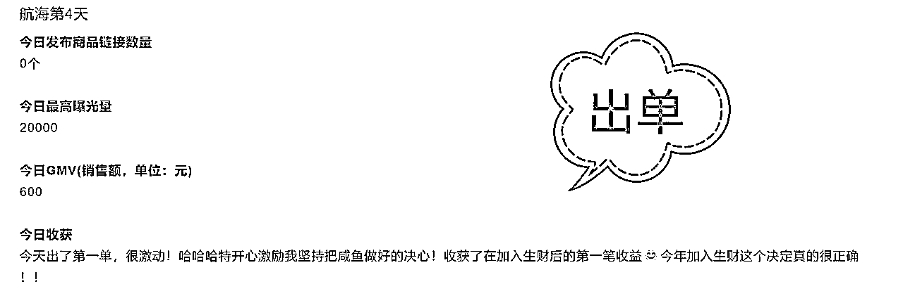
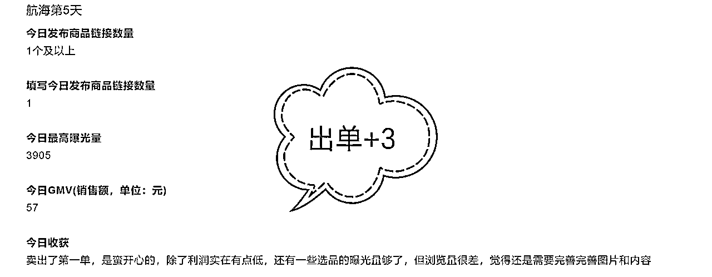
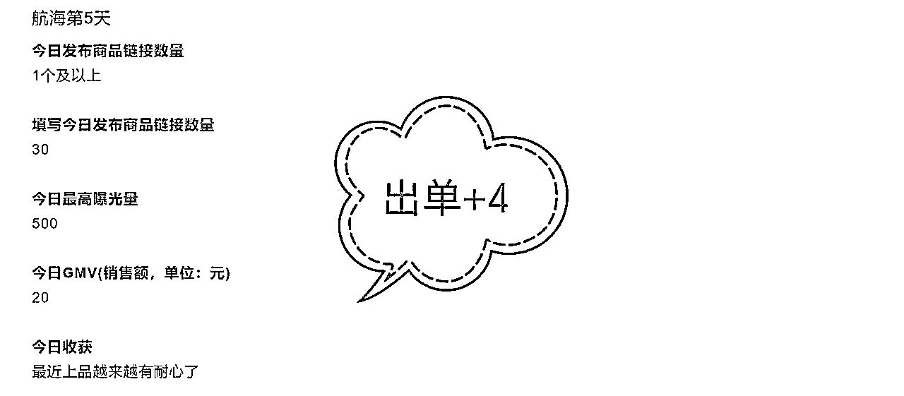
航海手册是非常详细的操作指南，从注册账号到上架，选品，售后话术等全都有，都是大佬们实操过的经验分享，要实战，照着操作就可以。
没经验不懂选品，上期闲鱼航海有提供60个选品，从里面选，选好了去评论区找买家秀，选择干净无杂乱，产品展示面好的一张作为首图，写好营销词：处理，低价清仓等，也可以是99元，65元等数字价格。
货源听教练的建议，从拼夕夕进货，为什么呢，因为拼夕夕的售后好，有退货什么之类的都能得到解决。
拼夕夕开通先买后付，它的付款周期基本是和闲鱼到账同步的，即使客户不提前确认收货，你也基本不用垫付什么资金，就可以赚差钱。你也不用挖空心思催促客户早点确认收货回笼货款，只有10天周期，等等都到了，不用急。
新手前期一定要坚持上品，最好每天更新3-5个品，如果做不到，1-2个也行，尽快上够50个品，（没开通鱼小铺，最多上架50个品）。
上满50个品就去优化更新，曝光不好的更改封面，营销词等，或者是下架再上新的品。让这个店铺的品都是曝光和想要数成交数比较好的品，提高店铺权重，获得更多的流量。
做到以上三个听话照做，还需要做到以下三个根本点
新手一到产品都会有以下疑惑
别急着说不！先看看市场数据，如果需求旺盛，那就值得一试。毕竟，赚钱的机会不等人。
赶紧去产品详情页补课！每个字都别放过，让自己成为半个专家。
不用担心，拼夕夕客服是你的超级后援。遇到难题，直接问客服，他们回复快得很。建议不要死磕一个卖家，这个不回复，立马去找另一个卖家咨询，完全不用担心回答不上来，还可以偷师卖家话术。
挖掘客户需求，每次回答都加上产品的卖点，客户确认好款式后要赞美客户。要便宜的客户，适当让点。
闲鱼客户几乎都是要买便宜的，这个便宜是指你要让他感受到便宜，有时候不一定是真要便宜很多，让价后你没得赚，也没有卖他的意义。
建议你加价也要在合理的范围内，客户嫌贵，让个5块10快的，让客户心里感受到占便宜了，自然也会成交。
建立信任后，也会有客户复购的，来的客户无论买与不买，都让客户心里舒服，不要你不买就不理了，依然笑脸送客，有需求再来哈老板。
有成交的客户和发货方沟通好，做好物流的沟通，有的客户对时效要求高，你就多去催促下，对于客户理解，客户收到货后满意还会有复购。
以上是我做闲鱼的一点心得，希望能对大家有帮助。
现在九月初的第一周我也已经实现过万的销售额，一笔4000+团购和每天持续2-3单。
我顺利的通过闲鱼赚到了两年的门票。虽然是一个的小的起步，但是我已经非常知足。
也感谢上期生财对我做志愿者的认可，给了我60术值的奖励，未来一起生财有术，实战航海。一起加油。
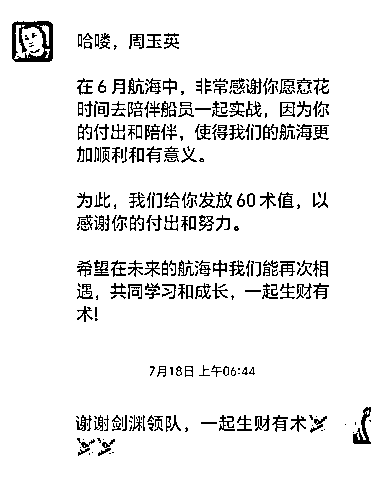
再次感谢靠谱给我做的定位，感谢芷蓝姐的写作指导学习，感谢雪雪运营对文章的指导和建议。